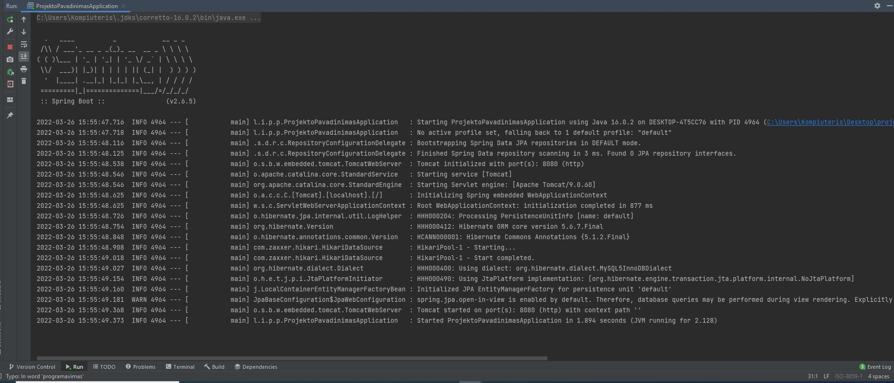

Spring boot konfiguracija


spring.datasource.url=jdbc:mysql://localhost:3306/programavimas5_spring_pamoka?serverTimezone=UTC&characterEncoding=utf8
spring.datasource.username=root
spring.datasource.password=
spring.jpa.database-platform=org.hibernate.dialect.MySQL5InnoDBDialect
spring.jpa.hibernate.ddl-auto=update





- lore
- lore
- lore
- lore
<p> yra pastraipos žymė